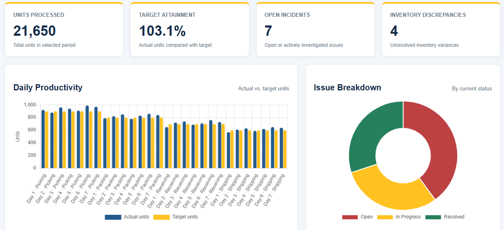

Team Leadership
Experience supervising 20+ employees, coaching associates, and reinforcing accountability.
I bring hands-on team leadership, operational problem-solving, documentation, and a growing technical background in computer science. My focus is helping teams work safely, efficiently, and consistently.
People leadership backed by operational and technical experience.
Experience supervising 20+ employees, coaching associates, and reinforcing accountability.
Daily workload coordination, safety procedures, quality checks, and inventory discrepancy follow-up.
Ticket tracking, digital documentation, issue escalation, and a foundation in IT and programming.
Open each position to review responsibilities.
Safety awareness, incident response, investigation, and clear communication.
Cross-functional operational support and process consistency.
Team supervision, training, workload coordination, and performance support.
Ticketing, operational issue tracking, and communication between teams.
Note: This website summarizes selected experience. It does not include confidential work details.
A combination of current technical study and practical workplace experience.
Practical projects connecting technology, data, and operational problem-solving.

An interactive web dashboard that models warehouse performance using fictional operational data. It presents key performance indicators, compares productivity with targets, and tracks example operational issues through interactive filters and charts.
Portfolio demonstration only. The dashboard does not use actual Walmart or employer data.
Interested in operations leadership, systems support, or technology opportunities? I'd welcome the chance to connect.
Email: bccurtis94@gmail.com
Phone: 317-868-4307